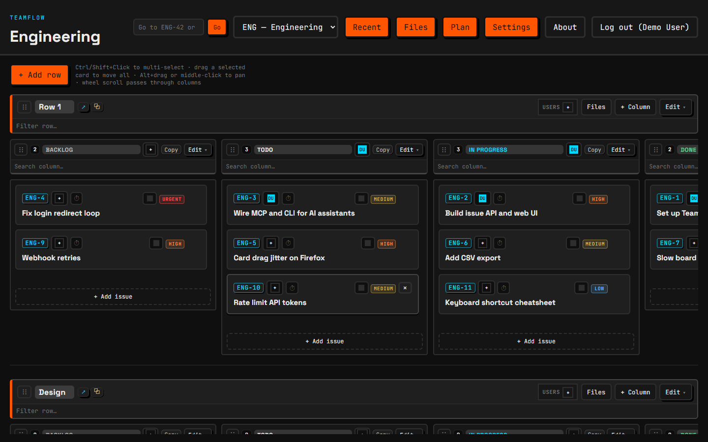
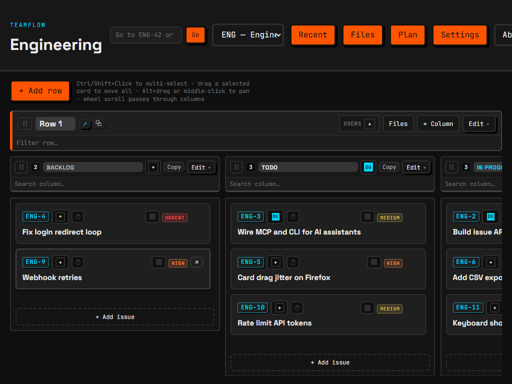
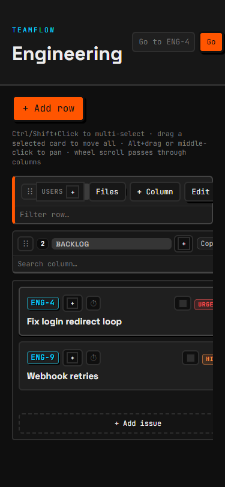
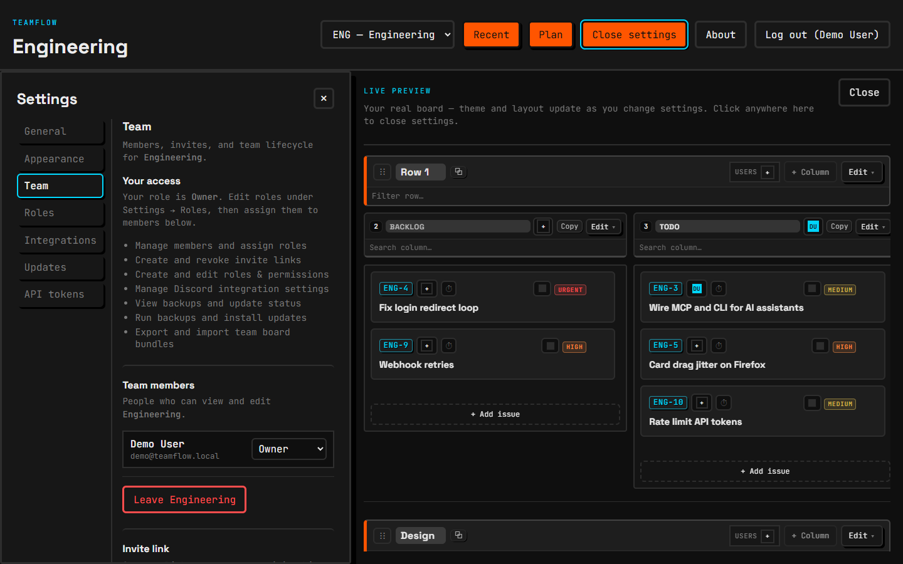
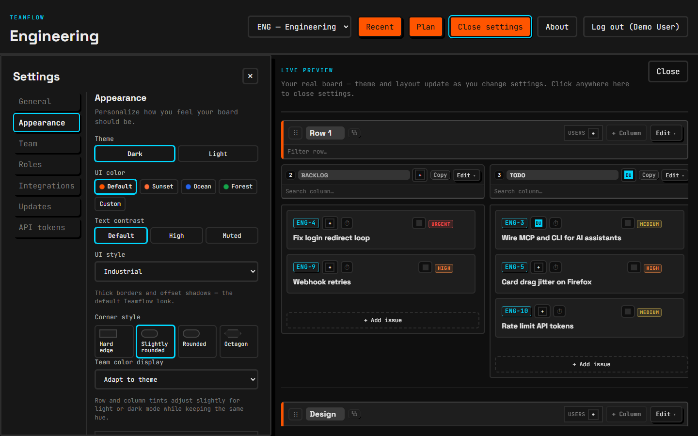
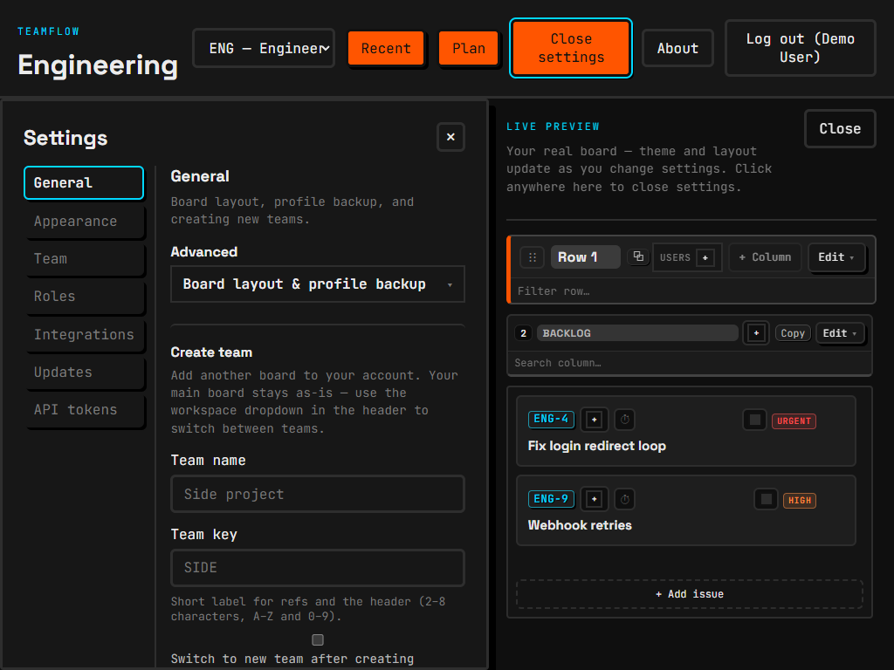
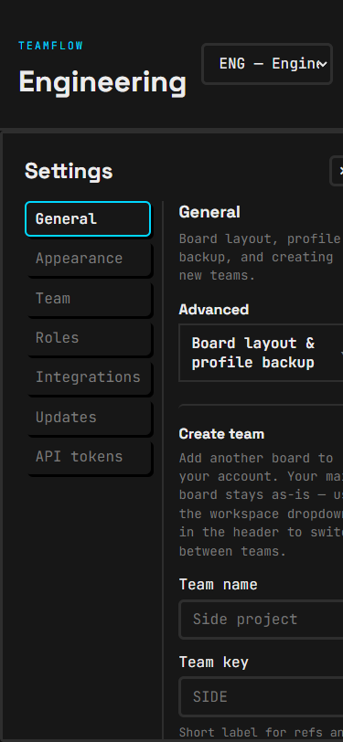
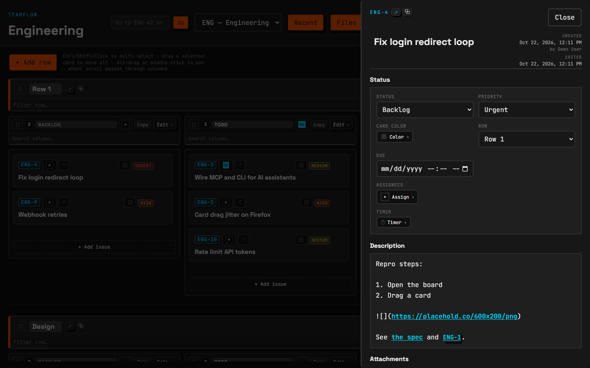
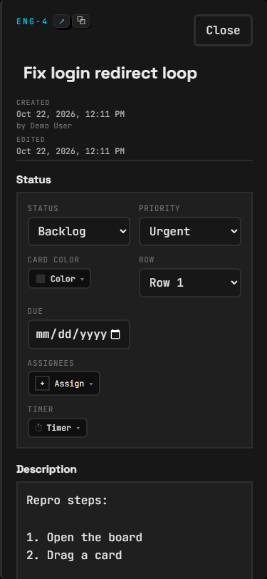

Lane 6 · phase 1 · 2026-10-22
Layout and positioning, before and after
Left: screenshots of branch claude/ui-primitives today (demo data, dark theme; click any shot for full size; all 36 are in docs/mockups/before/). Right: the proposed layout, drawn with the app's own tokens so colours, radii and chrome match. Mock frames are real pixel sizes scaled down. Nothing in the app has changed yet. The numbered change list at the bottom is what to pick from.
1
Topbar






- Nine controls in one non-wrapping row; overflow is hidden, so on narrow screens Recent, Files, Plan, Settings and Log out disappear.
- Every button is primary orange, so nothing stands out.
- The "TEAMFLOW / Engineering" heading repeats the team switcher and costs ~55px of height.
- Go-to placeholder is cut ("Go to ENG-42 or"); the separate Go button is redundant (Enter submits).
- Recent is a disabled button with no hint when there is no history.
- Left: team switcher (shows key + name, replaces the h1) and ref search with a / shortcut; Enter goes, the Go button is dropped.
- Right: Recent / Files / Plan as quiet ghost buttons (icon + label ≥1200, icon + tooltip below). Recent stays enabled and shows "No recent changes yet" when empty.
- Settings, About and Log out move into a user menu (Popover from
src/ui/). Settings becomes a page you leave with "← Board", not a toggle. - Topbar height ~56px instead of ~110px; "← Back" (ref back) stays as a small button next to search when present.
2
Board
- Columns are a fixed 420px (
--board-column-width), so four never fit at 1440 and the 4th is cut mid-card. - No visible cue that the board scrolls sideways; the scrollbar sits at the very bottom of a tall board.
- The long drag/pan hint is squeezed into three lines next to "+ Add row".
- An empty column is just a blank box with "+ Add issue" at the bottom.
- Ctrl/Shift+click
- select several cards
- Drag a selected card
- moves all selected
- Alt+drag / middle-click
- pan the board
- Wheel
- scrolls through columns
- /
- jump to an issue
+ Add issue
or drag a card in
- Default column width becomes "fit":
clamp(260px, (board width − gaps) / 4, 420px), so four fit from ~1200px up. A width the user picked in Appearance still wins (setting gains an "Auto" option, default). - Horizontal scroll affordance: right-edge fade plus a "n more →" button that scrolls one column; a left fade/← appears once scrolled. Thin scrollbar under each row's columns, not only at the page bottom.
- "+ Add row" stays; the hint text moves to a "? Board tips" popover.
- Empty column: dashed panel "No issues here yet", Add issue button, "or drag a card in". Viewers (no
board.edit) just see "No issues".
3
Settings








- Three close controls: "Close settings" (topbar), "Close" (preview), "×" (panel). Clicking the preview also closes.
- The live board is shown on every panel (Team, Roles, Tokens…), where it means nothing; it is the real KanbanBoard fed ~30 no-op props.
- Panel content lives in a ~300px column; nav buttons look like raised buttons.
Team
Members, invites and team lifecycle for Engineering. Your role is Owner.
Anyone with the link joins as Member.
Create invite linkLeave or delete Engineering.
Leave EngineeringAppearance
Theme, chrome and board density. Changes apply as you go.
- Settings is a full page under the topbar: left nav (220px) grouped Account / Team / Server, content column max 720px.
- One way out: "← Back to board" at the top of the nav, plus Escape. The topbar no longer flips to "Close settings"; the "×" and the preview "Close" go.
- Preview only on Appearance, as a ~380px framed sample (one row, two columns, three cards) that is sticky beside the controls; below 1100px it sits above the controls.
- Removes the
board-wrap--previewpath and the ~30settingsOpen ? () => {} : …props from BoardShell.
4
Issue drawer


, native date input

- Image markdown shows as text
with a link; images never render. - Due date is the browser's
mm/dd/yyyy --:--input, which looks different in every browser. - One box headed "Status" holds status, priority, colour, row, due, assignees and timer.
- Created/Edited stack sits beside the title and squeezes it; "Close" is a large text button.
Fix login redirect loop
- Open the board
- Drag a card
Fix login redirect loop
- Open the board
- Drag a card
- Header: ref chip + copy/open, title on its own full-width line, one meta line (created · edited · History), "⋯" (delete, complete) and an ✕ icon.
- Groups: Workflow (status, priority, row, due) and People & time (assignees, timer, colour), two columns ≥ 900px drawer width, one column below.
- Description renderer gains image segments (
and Teamflow attachment URLs only, lazy, max-height, click opens the existing lightbox) and opens external links in a new tab. Extendslib/descriptionFormat.ts, no new markdown dependency. - Due: a button showing "Fri 24 Oct · 17:00" that opens a Popover calendar with quick chips and a time field. No new dependency (small in-house month grid).
- Drawer width 720px ≥1200, 560px 768–1199, full-screen sheet below 768 (all three drawers: issue, row files, team files).
5
Banners, toasts and the bulk bar
- The ref notice ("Jumped to ENG-12…") and "Loading…" are
.bannerblocks in normal flow; they push the whole board down and back up. - Errors already moved to a dismissible toast (lane 5); notices did not.
- The bulk action bar sits in the toast dock at
--z-toast; if a selection survives opening a drawer, it covers the drawer's bottom (lane 5 leftover). - Bulk bar headings read literally "Left" / "Right".
Row 1 · Files
✕- Ref notice becomes an info toast (auto-dismiss 5 s); loading becomes a 2px progress bar under the topbar. No banner remains in the board's flow.
- The dock (toasts + bulk bar) gets a right inset equal to the open drawer's width (
--drawer-insetset byDrawer), so neither ever covers a drawer. Below 768 the bulk bar hides while a full-screen drawer is open. - Bulk bar: "Left/Right" headings removed, actions in one line, count + clear (✕).
6
Mobile (below 768px)


- A 420px column in a 375px screen: cards cut at the right; row header buttons overflow.
- Settings nav takes half the width and pushes content off screen.
Team
Members, invites and team lifecycle for Engineering.
Anyone with the link joins as Member.
Create invite link- Board below 768: one column at a time, full width; a row select and a scrollable chip strip of columns (with counts); horizontal swipe changes column. Drag between columns works through the chips as drop targets.
- All drawers become full-screen sheets with a sticky "←" header.
- Settings nav becomes a
<select>at the top of the page.
Extra
Smaller fixes spotted


| Where | What | Fix |
|---|---|---|
| Login | "Log in / Register" mode switch looks exactly like the submit button; two orange "Log in" buttons on one card. | Segmented tab control for the mode; only the submit is primary. |
| Files drawer | "Active / Trash" are orange primary buttons; empty state gives no hint where files come from. Uses issue-drawer classes (lane 5 leftover). | Segmented tabs, helpful empty state, own team-files-drawer* classes. |
| Cards | Every card shows an empty colour square and a "+" assign square even when unset; delete × appears only on some. | Show unset colour/assign controls on hover/focus only; keep set values visible. |
| Row/column headers | "Filter row…" and "Search column…" take a full line in every row and column (~60px per row); "Copy" button meaning unclear; "USERS +" label. | Search behind a ⌕ icon that expands; "Copy" → copy icon with tooltip "Copy column link"; "Users" → avatar stack + "+". |
| Drawers | Big text "Close" button. | ✕ icon button, same as dialogs. |
| Recent | Disabled with no explanation when empty. | Enabled; panel says "No recent changes yet". |
| Plan | Stat tiles and cards fine; "Updated 2026-06-17" is stale and the production URL is shown to all users. | Content issue for lane 7 (docs), not layout. At 375 the four stat tiles should go 2×2. |
| Topbar | Ref "← Back" button only appears when there is history and shifts the search box. | Reserve its slot (or put it inside the search field). |
Pick
Proposed changes (one commit each)
| # | Change | Area |
|---|---|---|
| 1 | Topbar regroup: team switcher + ref search left, Recent/Files/Plan right, user menu for Settings/About/Log out; drop the h1; ghost buttons. | Topbar |
| 2 | Topbar responsive: icons-only 768–1199, single ☰ menu below 768. | Topbar |
| 3 | Board column "Auto" width so four fit at 1440 (custom width still available in Appearance). | Board |
| 4 | Horizontal scroll affordance: edge fades and "n more →" / "←" buttons. | Board |
| 5 | Board tips popover replaces the inline drag/pan hint. | Board |
| 6 | Empty-column state. | Board |
| 7 | Settings full page: grouped left nav, 720px content, one "← Back to board" + Escape. | Settings |
| 8 | Appearance-only framed sample preview; remove the live-board preview and its no-op props. | Settings |
| 9 | Issue drawer: new header, grouped two-column fields. | Drawer |
| 10 | Description: inline images and new-tab external links. | Drawer |
| 11 | Date-time picker popover for Due. | Drawer |
| 12 | Drawer widths 720/560 and full-screen sheet below 768 (issue, row files, team files). | Drawer |
| 13 | Ref notice → info toast; Loading → progress bar; no banners in flow. | Toasts |
| 14 | Required (lane 5 leftover): dock and bulk bar inset by the open drawer's width; bulk bar "Left/Right" headings removed. | Toasts |
| 15 | Required (lane 5 leftover): TeamFilesDrawer gets its own team-files-drawer* classes. | Drawer |
| 16 | Mobile board: one column, row select + column chips, swipe. | Mobile |
| 17 | Mobile settings: nav as a top select. | Mobile |
| 18 | Small fixes batch: login mode tabs, Files segmented tabs + empty state, card hover-only empty controls, Recent empty state, ✕ close icons. | Small |
| 19 | Row/column header compaction: search behind an icon, copy icon, avatar stack. | Small |
After screenshots at 1440×900, 1024×768 and 375×812 will go in docs/mockups/after/ with the same file names.